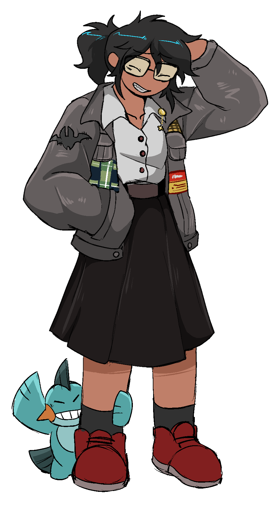
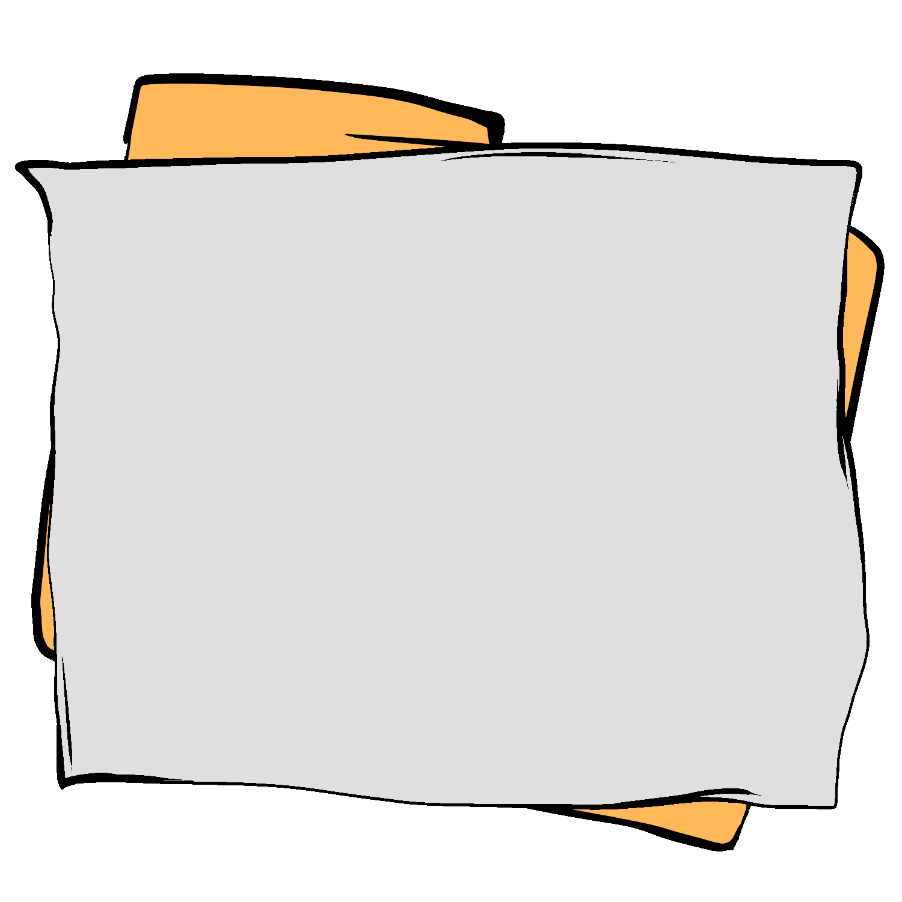

Welcome to My Lab! ✨
Hey there! I'm Mary Grace, a Computer Science student at HCU. This notebook showcases the various projects, forms, and interactive pages I've built.
Click on any of the colored tabs sticking out of the right side of this folder to load my interactive projects directly into this page!
Click a tab to start ➔